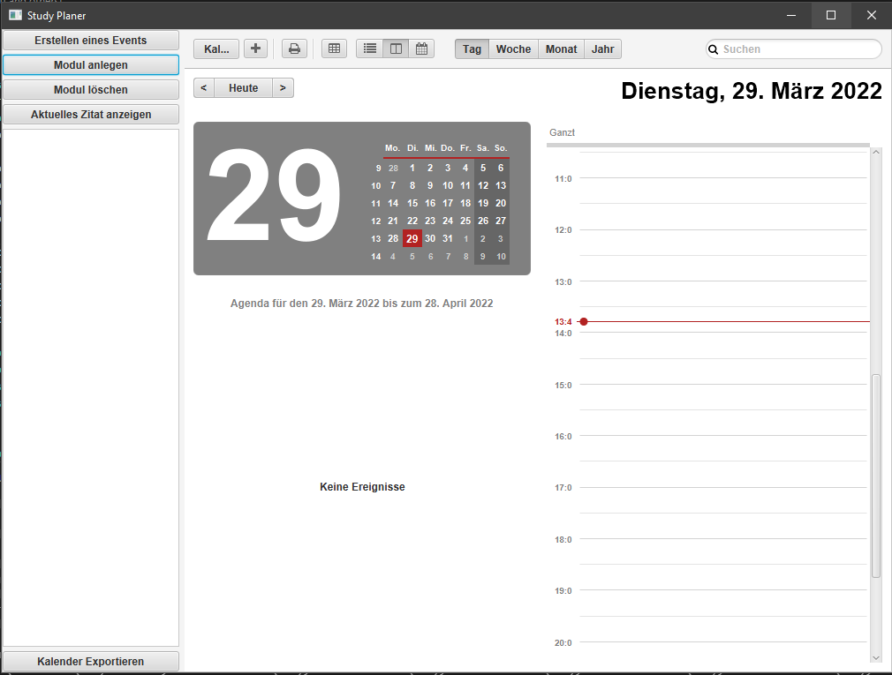
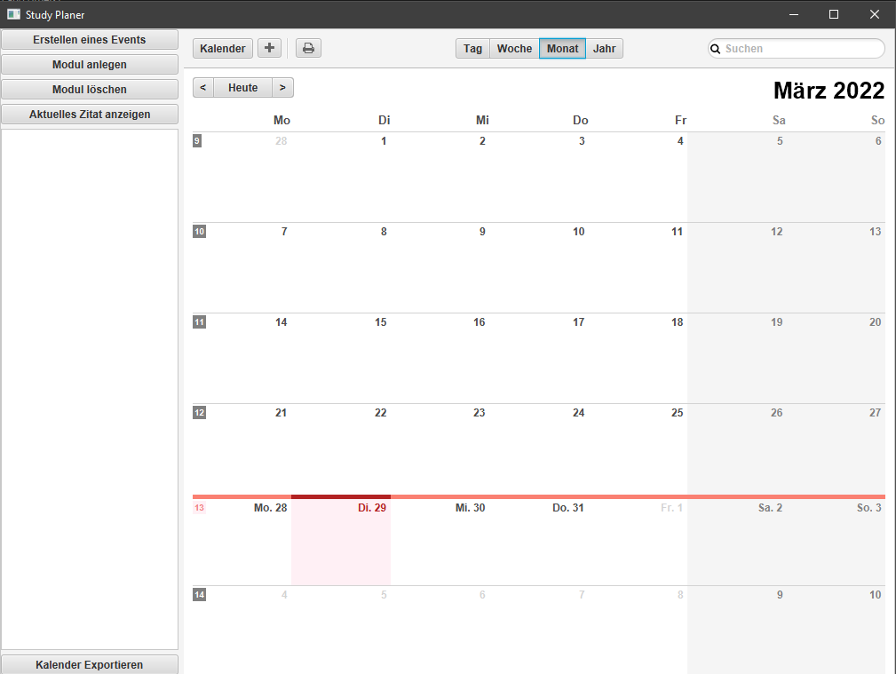
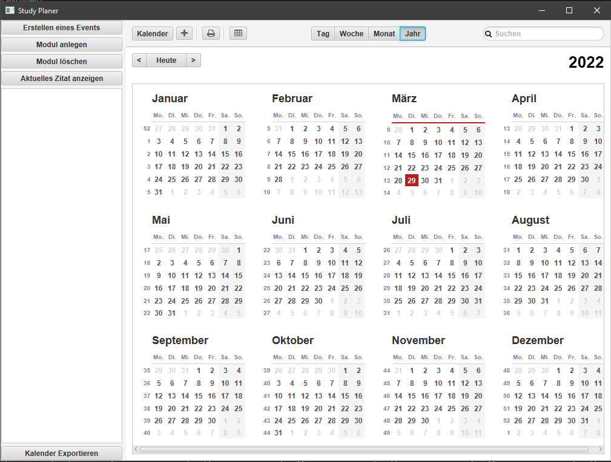
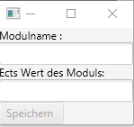
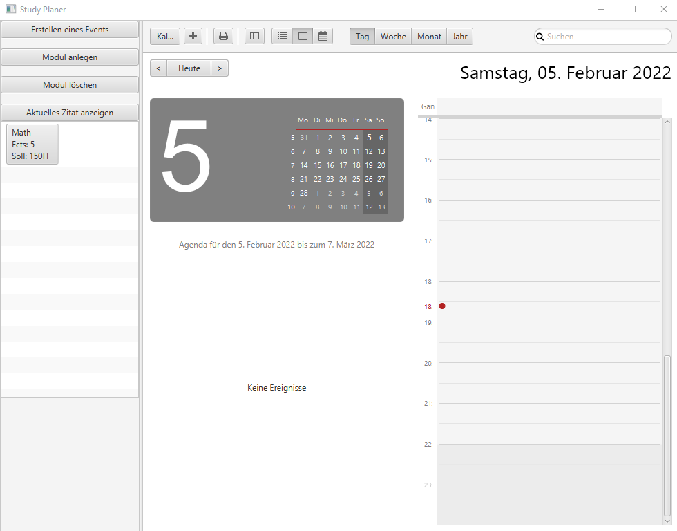
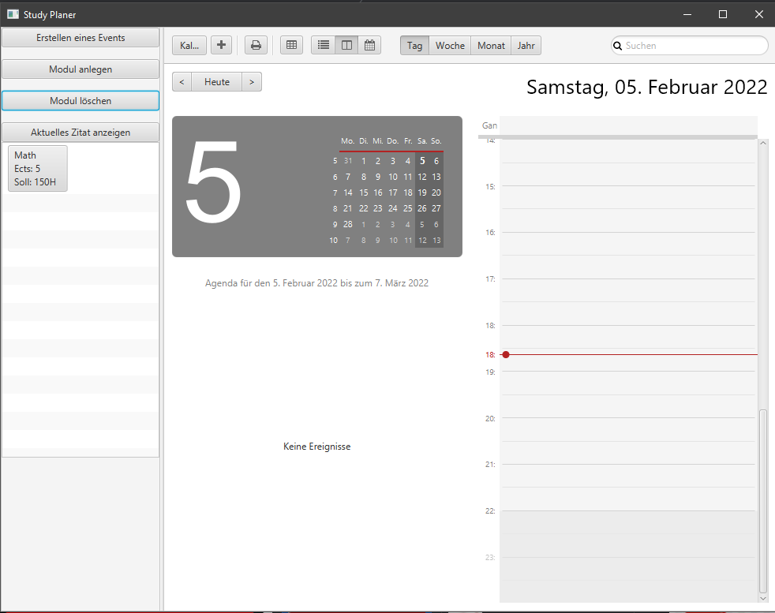
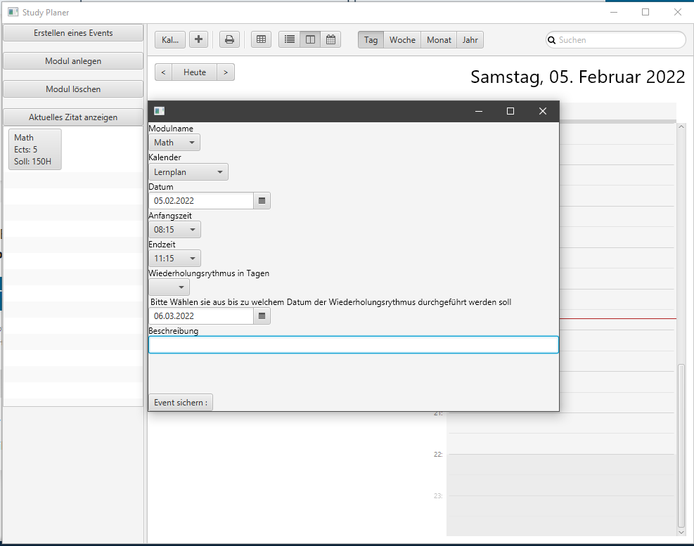

- How to add a Modul
- How to edit a Modul
- How to delete a Modul
- How to add a lecture / learning session
- How to delete a lecture / learning session
|
You see your Moduls on the left side and the calendar on the right side. to see the week click on Woche on the middle Top: |
 |
|
for a monthly overview click on Monat |
 |
|
Or if you want to see the whole year click on Jahr: |
 |
You click on the button Modul anlegen to add a new Modul
|
When you clicked on the Modul anlegen button a window will open in the middle of your Screen. here you can set a Modul name and the Credit Points for this modul. Then you can click on the Speichern button. |
 |
|
This is how it looks like when you added a Modul: |
 |
You have to click on the modul you want to change. Then you can set up your changes and click on the Ändern button.
|
When you want to delete a modul you have to click on the Modul löschen button. Select the modul you want to delete and put a hack into the check box are you sure you want to delete this modul. |
 |
How to add a lecture/ learning session
First step:
You can add a lecture to your timetable while you click on the Erstellen eines Events button.
Second step:
A window will open where you have to choose witch Modul you want to add to your timetable. Then you have to choose if this event is a part of your learning session or your timetable. You also have to choose the Anfangszeit and the Endzeit and the Datum. If you wish, you can choose a repetition cycle of 1 2 3 4 5 6 7 14 days unter Wiederholungsrythmus in Tagen, but don't forget to indicate until when the cycle should end in the field below.
Optionally you can add a description to the event. --> The credit points of a Modul will automatically convert into hours, and always when you add a lecture or a learning session the time you invest in a modul will automatically decrease
To delete a lecture or a learning session you have to right-click on the entry in your calendar you want to delete. Then choose to delete or by selecting the event by left click and press delete on your Keyboard.